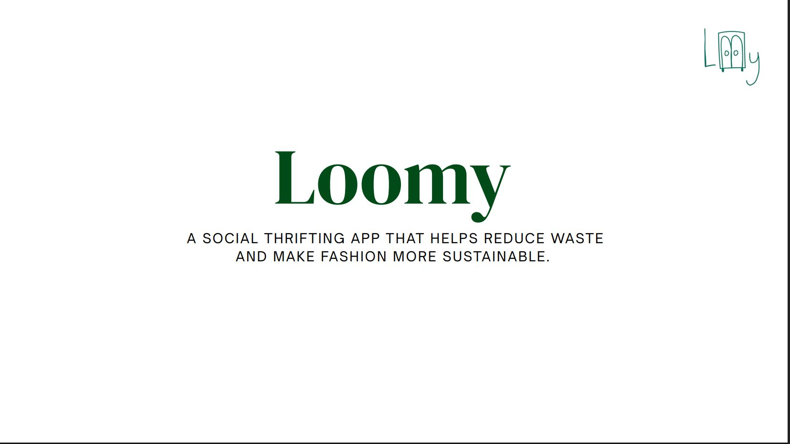
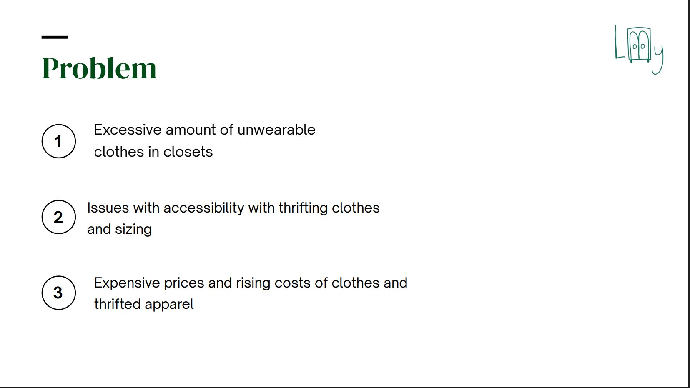
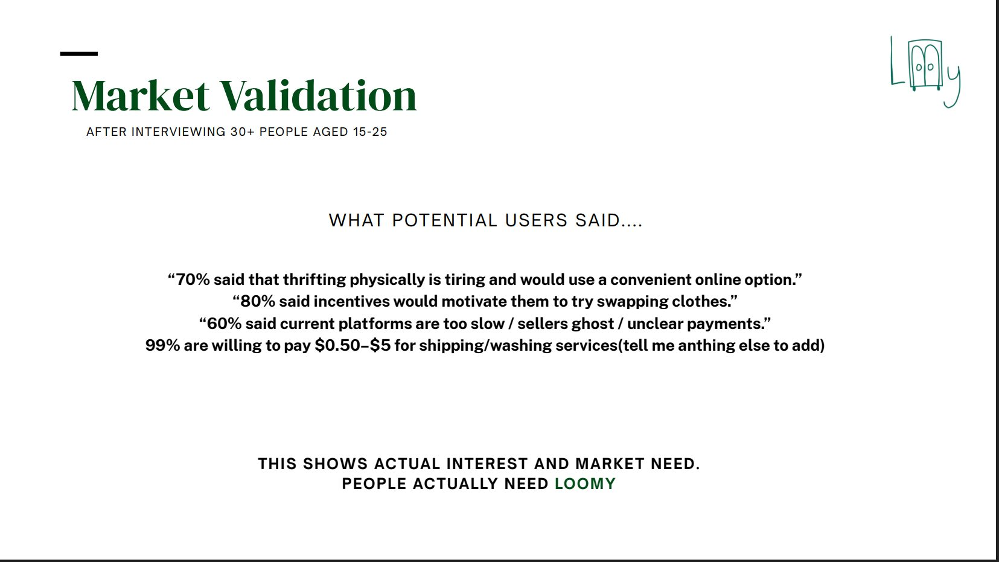
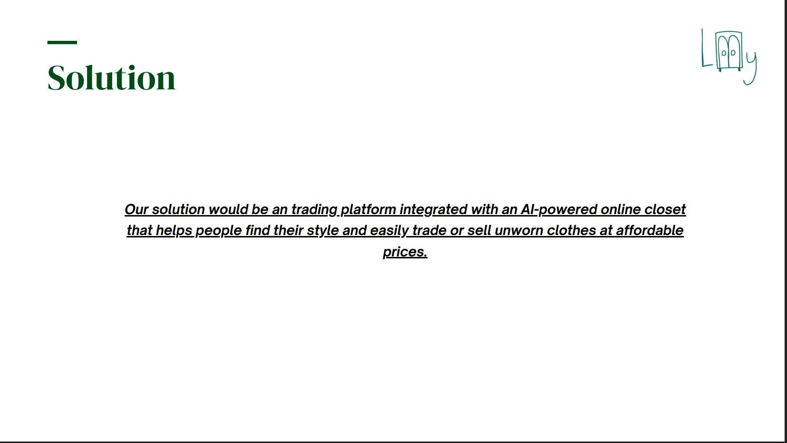
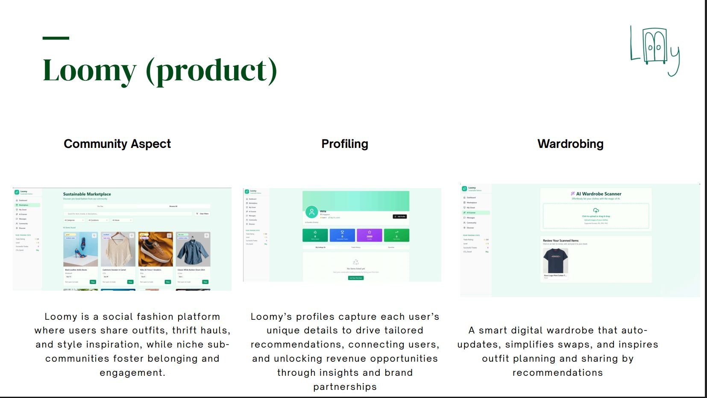
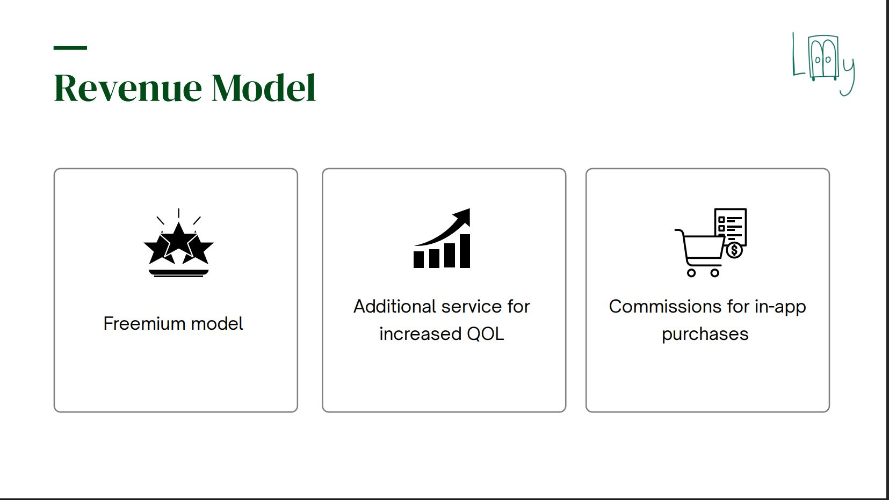
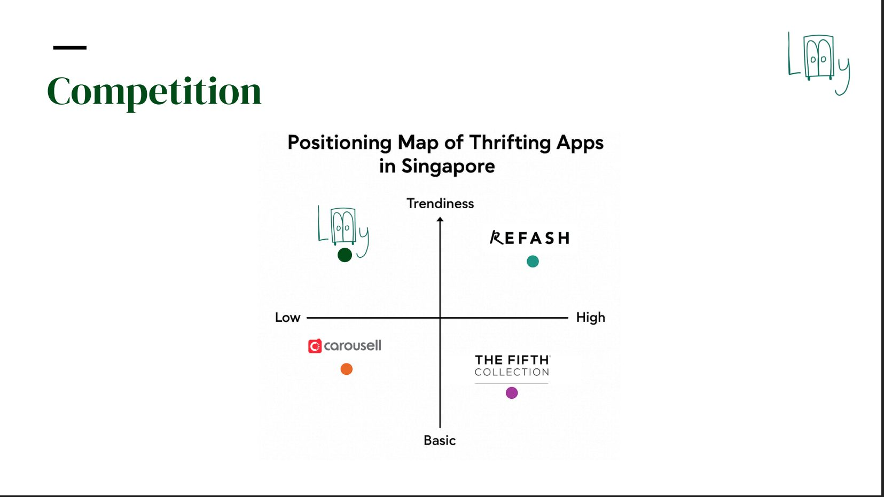
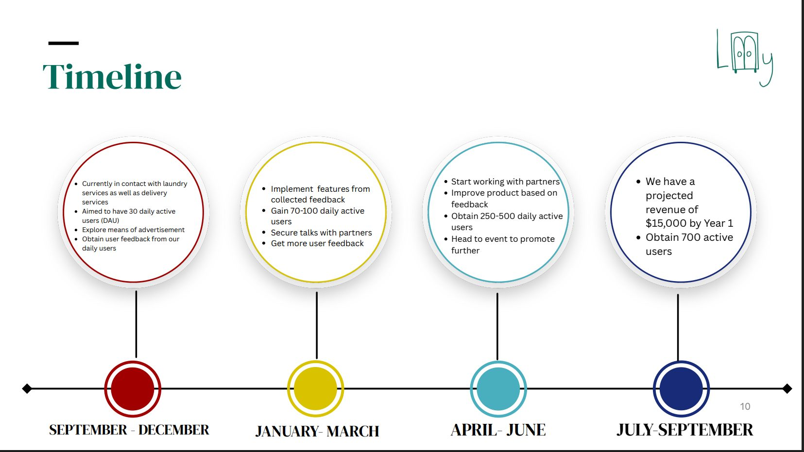
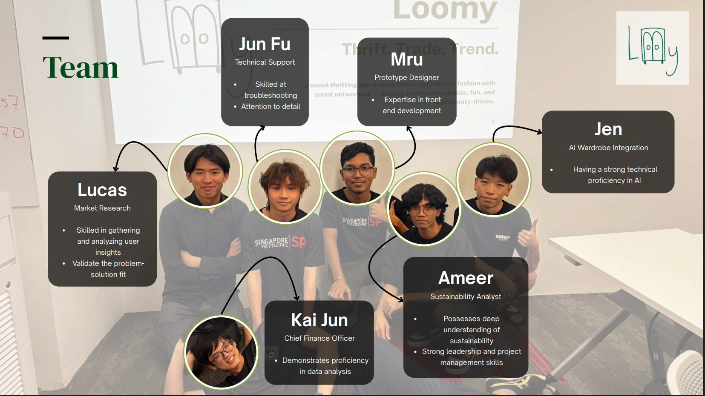
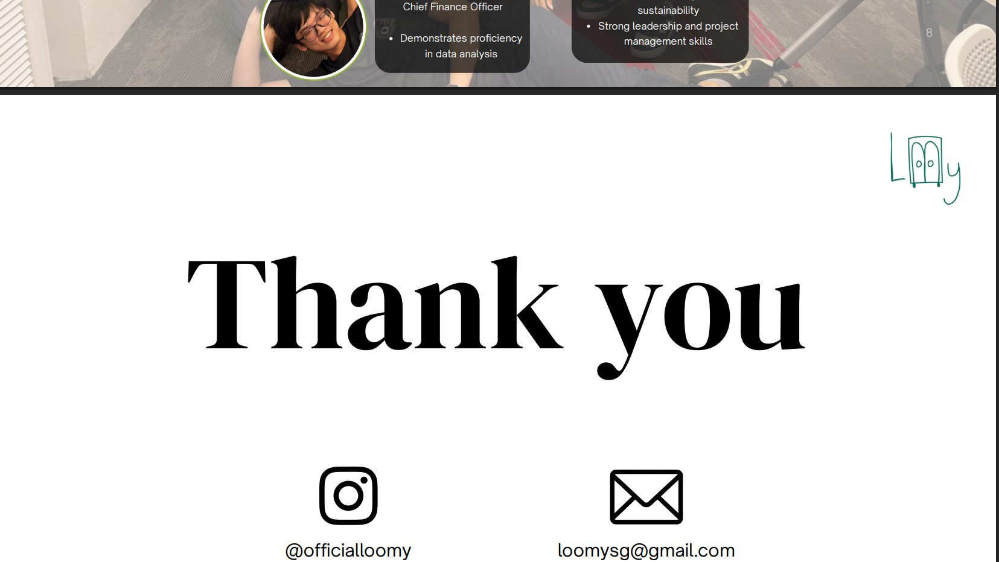

Loomy
Second-hand fashion is social. Most thrifting apps treat it as a transaction.
At a glance
- Role
- User research and product design
- Result
- Prototype and pitch deck, from 30+ user interviews
- Team
- Six members
- Status
- Product concept — not shipped
Research first
Thirty conversations before a single screen.
Loomy started with more than 30 interviews with people aged 15 to 25. The research decided what the product should be, which is why it is the part of this project worth showing.
30+
people aged 15–25 interviewed, before any product was designed
The pitch
Ten slides, as we pitched them.
The deck is the artefact the research produced. It is reproduced here in full, and the original PDF is one click away.










The timeline slide carries targets and a projected first-year revenue figure. They are projections we pitched, not results Loomy achieved — Loomy is a concept, and none of those numbers have happened.
My role
I worked on user research and product design, and built the prototype the team pitched. The 30+ interviews behind the concept were the team's; the findings are what decided the product structure.
Result
A prototype and a pitch deck, grounded in more than 30 interviews.